close all;
clear all;
im=imread('CA.jpg');
imshow(im),title('Original Image');
if size(im,3)==3
im=rgb2gray(im);
end
figure,imshow(im),title('Gray Scale');
pause(2)
thrsh=graythresh(im);
orig=~imbinarize(im,thrsh);
figure,imshow(orig),title('B&W Image');
im = bwareaopen(orig,5300);
figure,imshow(im),title('Sticker isolated using Open');
im2=imsubtract(orig,im);
figure,imshow(im2),title('Removed sticker by Subtracting');
im3=im2 & ~bwareaopen(im2,5200);
figure,imshow(im3),title('Removed noise by subtracting');
im11=im2double(im3);
im5=imsubtract(im2,im11);
figure,imshow(im5),title('Contains some of the noise we want to remove');
im4 = bwareaopen(im2,5290)+im11;
imfinal= bwareaopen(im4,3000);
figure,imshow(imfinal),title('Final image to be processed');
figure;
imshow(~imfinal),title('Recognize Objects');
[L Ne]=bwlabel(imfinal);
propied=regionprops(L,'BoundingBox');
hold on
for n=1:size(propied,1)
rectangle('Position',propied(n).BoundingBox,'EdgeColor','g','LineWidth',2)
end
hold off
pause (1)
for n=1:Ne
[r,c] = find(L==n);
n1=imfinal(min(r):max(r),min(c):max(c));
figure, imshow(~n1),title('Cropping Structure Element Found Using RegionProp');
end
two=imread('2.bmp');
four=imread('4.bmp');
six=imread('6.bmp');
seven=imread('7.bmp');
I=imread('I.bmp');
K=imread('K.bmp');
L=imread('L.bmp');
found6=imerode(imfinal,~six);
f6=sum(found6);
f66=sum(f6);
if f66==1
lValues=sprintf('%d',6);
end
figure,imshow(~six),title('Identfied Value');
foundL=imerode(imfinal,~L);
[m, n] = size(foundL);
for x = 1:m
for y=1:n-18
foundL1(x,y)= foundL(x,y+18);
end
end
fL=sum(foundL1);
fLL=sum(fL);
if fLL==1
lValues=sprintf('%s%s',lValues, 'L');
end
pause(1.7)
figure,imshow(~L),title('Identfied Value');
foundI=imerode(imfinal,~I);
fI=sum(foundI);
fII=sum(fI);
if fII==1
lValues=sprintf( '%s%s',lValues,'I');
end
figure,imshow(~I),title('Identfied Value');
foundK=imerode(imfinal,~K);
fK=sum(foundK);
fKK=sum(fK);
if fKK==1
lValues=sprintf( '%s%s',lValues,'K');
end
figure,imshow(~K),title('Identfied Value');
found2=imerode(imfinal,~two);
f2=sum(found2);
f22=sum(f2);
if f22==1
lValues=sprintf( '%s%d',lValues,2);
end
figure,imshow(~two),title('Identfied Value');
found7=imerode(imfinal,~seven);
f7=sum(found7);
f77=sum(f7);
if f77==1
lValues=sprintf( '%s%d',lValues,7);
end
figure,imshow(~seven),title('Identfied Value');
found4=imerode(imfinal,~four);
f4=sum(found4);
f44=sum(f4);
if f44==1
lValues=sprintf( '%s%d',lValues,4);
end
figure,imshow(~four),title('Identfied Value');
disp(lValues);
6LIK274
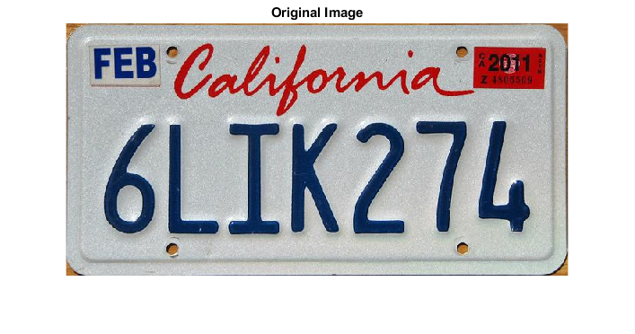 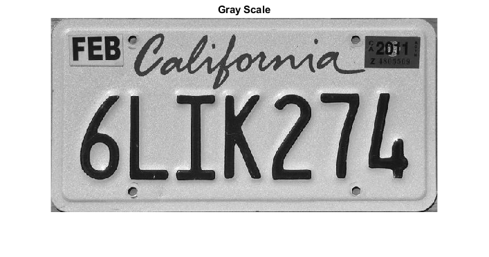 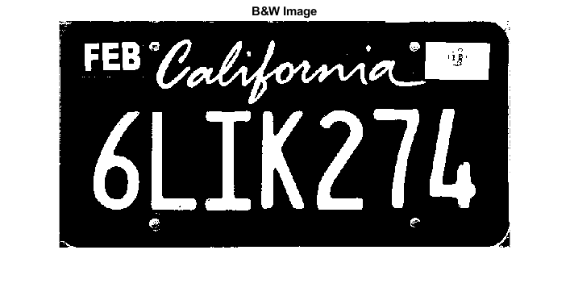 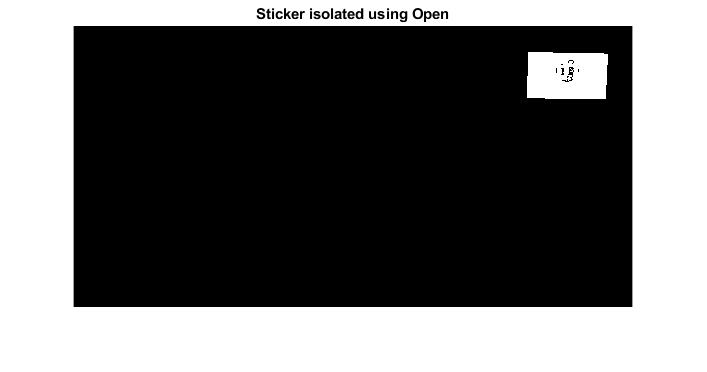 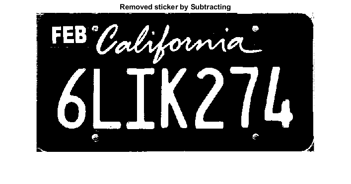 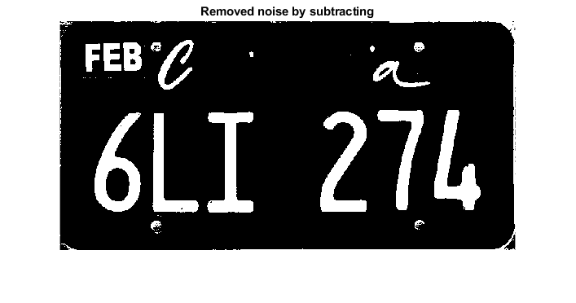 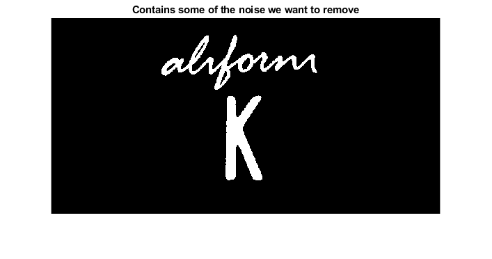 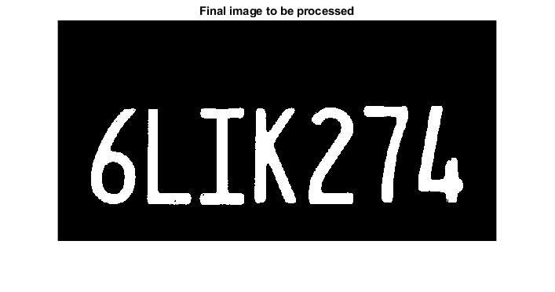 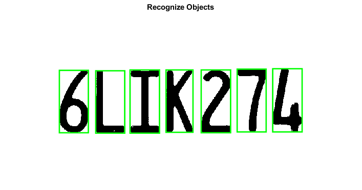 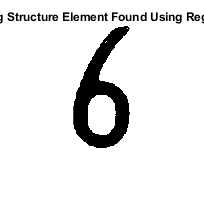 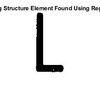 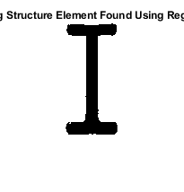 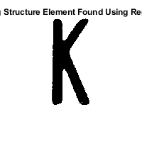 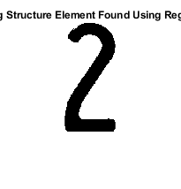 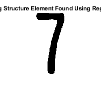 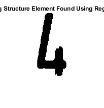 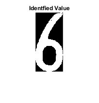 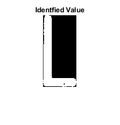 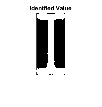 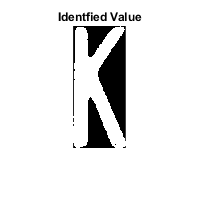 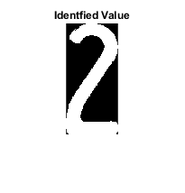 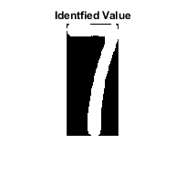 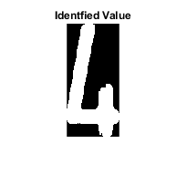